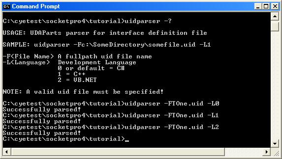

Tutorial One
Contents:
Write client and server codes with uidparser.exe
Experiments with SocketPro server
Responsibilities
of main thread with SocketPro server
SocketPro, a communication framework, is written with requests batch, asynchrony and parallel
computations using raw non-blocking socket TCP/IP. The framework is considerably different from common
distribution frameworks like Java RMI, DCOM, dotNet remoting, WCF and web
service. Many features are specific and can’t be found in other
frameworks. Therefore, we have created a series of tutorial samples to assist
your development. As you study these samples, it is
strongly recommended that you fully understand every one of the features and
code comments while experimenting with them. All of the tutorial samples are
written with C++, C# and VB.Net languages. Each
sample contains two small applications, a client application and a server
application for each of these development languages.
To get used to
SocketPro fast, you must keep in mind that SocketPro uses asynchronous
computation. It is challenging for us to like asynchronous computation at the
very beginning because most of us are not used to it at all. We recommend that
you use visual studio with debug break points every where at both client and
server sides for playing sample and tutorial codes. Once you are used to
asynchronous computation, you will like the power of SocketPro! From our view,
sample and tutorial applications are much more helpful to you than documents.
Understand a uid (universal interface definition) file, and use SocketPro tool uidparser.exe to quickly create skeleton code for both client and server through the file.
This very first
sample is designed for quickly creating a service to process the following five
requests:
A. Echo an object data (VARIANT in
C++) between client and server applications.
B. Query the number of requests processed
since a client is connected to a server.
C. Query
the number of processed requests (both fast and slow ones) from all clients
since a SocketPro server started.
D. Query
the number of fast requests processed from all clients since a SocketPro server
started. The number excludes the number of slow requests processed.
E. Sleep
(on the server) for a specified time in milliseconds, which simulates a slow
processing request.
A client window application is created to demonstrate how to build a socket
connection, how to send one or a set of requests in batch, and how to process
returned results. Besides, it shows how to switch between two computation
models, asynchrony and synchrony, and how to control window events.
A console server application is created to process
the above five requests with the help of SocketProAdapter, an open source
module for simplifying SocketPro server development. The server application demonstrates how to start a
listening socket for receiving requests to process, how to create a service, and how to process requests. All of these are quite
simple using SocketPro development for the server. The most important objective
is to explain thread management within SocketPro, and show you what variables
are required to be synchronized with window thread locking objects and what
variables do not need to be synchronized.
2. Write client and server codes with
uidparser.exe
SocketPro comes with a code generator to write skeleton client and server code from a given universal interface definition file having extension uid. It is very similar to other interface definition files like COM and CORBA. Take this sample, its uid file contains the below code.
[
ServiceID
= 20 //service id can't be less than 0
]
CTOne
{
int QueryCount(); //Returns
the count of calls from one socket connection
/*Returns count of all requests from all socket connections*/
int QueryGlobalCount();
/*Returns the count of fast requests from all socket connections*/
int QueryGlobalFastCount();
/*Sleep for a given time nTime in milliseconds. It is a slow request*/
$void Sleep(in int nTime);
object Echo(in object objInput); //echo arbitrary data
}
In regards to the correct use of uidparser.exe, please see detailed comments inside file TOne.uid. There is no need to re-describe the various simple rules in this tutorial again. However, you must be clear if a request takes a long time to process. Take this sample as an example, the request Sleep may require a long time to process, and all of other four requests will require very little time to be completed. Prepend char ‘$’ before the return value to indicate that the request is a slow one.
The uid file feeds the uidparser.exe code generator
to quickly generate skeleton code. See the below Figure for creating
skeleton code for C#, C++ and VB.NET by use of uidparser.exe.

Figure 1. Create SocketPro client and server
skeleton code from a given uid file with uidparser.exe.
For this sample, uidparser creates
three files with proper file extensions for each of three development
languages. The first file named as TOne_i.cs for C# contains all of constants
definitions as shown in the following. The tool uidparser is destructive. For an existing project, ensure that you are not
overwriting generated source files that you have modified. Ensure that uid file is moved to another directory. Then you manually merge changes into
existing generated source files.
public static class TOneConst
{
//defines for service CTOne
public const int sidCTOne = ((int)USOCKETLib.tagOtherDefine.odUserServiceIDMin
+ 20);
public const short idQueryCountCTOne = ((short)USOCKETLib.tagOtherDefine.odUserRequestIDMin
+ 0);
public const short idQueryGlobalCountCTOne = (idQueryCountCTOne +
1);
public const short idQueryGlobalFastCountCTOne =
(idQueryGlobalCountCTOne + 1);
public const short idSleepCTOne = (idQueryGlobalFastCountCTOne +
1);
public const short idEchoCTOne = (idSleepCTOne
+ 1);
}
This
file will be referenced by both client and server applications. The constant
sidCTOne is a service id for this sample service. All of others are ids for
five requests. SocketPro supports multiple services within one listening
socket. Each of services must be identified by one unique integer number, named
as service id. Similarly, each
of requests has one unique
identification number within one service.
3. Server side development
Reference
SocketProAdapter for easy development -- At the very beginning, you
need to reference SocketProAdapter.dll if your development environment is one
of dotNet languages (C# and VB.NET), or add the files sprowrap.cpp and
sprowrap.h into your C++ project for a server application. Also, use namespaces
SocketProAdapter and SocketProAdapter.ServerSide.
Derive CTOnePeer from CClientPeer -- Next, derive a class from the abstract class CClientPeer inside the namespace SocketProAdapter.ServerSide as shown in the file TOneImpl.cs. You must implement two pure virtual functions, OnFastRequestArrive and OnSlowRequestArrive. Each of its instances represents a socket connection, corresponding to a client. As function names indicate, you should process all of fast requests inside the first function that is called inside a main thread, and slow requests inside the second function that is called within a worker thread. The main thread is running with listening socket. At this point, you simply ignore it, and we’ll discuss more about the main thread later in this section. As shown in the sample code, only the request Sleep is processed inside the second virtual function, and all of other four requests are processed inside the first function. See the below code.
public class CTOnePeer : CClientPeer
{
protected override void OnSwitchFrom(int
nServiceID)
{
//initialize the object here
}
protected override void OnReleaseResource(bool
bClosing, int nInfo)
{
if(bClosing)
{
//closing the socket with error code = nInfo
}
else
{
//switch to a new service with the service id = nInfo
}
//release all of your resources here as early as possible
}
protected void
QueryCount(out int QueryCountRtn)
{
// TODO: Implement this method
throw new NotImplementedException();
}
protected void
QueryGlobalCount(out int QueryGlobalCountRtn)
{
// TODO: Implement this method
throw new NotImplementedException();
}
protected void
QueryGlobalFastCount(out int QueryGlobalFastCountRtn)
{
// TODO: Implement this method
throw new NotImplementedException();
}
protected void Sleep(int nTime)
{
// TODO: Implement this method
throw new NotImplementedException();
}
protected void Echo(object objInput, out object EchoRtn)
{
// TODO: Implement this method
throw new NotImplementedException();
}
protected override void OnFastRequestArrive(short
sRequestID, int nLen)
{
switch(sRequestID)
{
case TOneConst.idQueryCountCTOne:
//Ix x -- the number of inputs from client, Ry y -- the
number of outputs (returns) that will be sent to client
M_I0_R1<int>(QueryCount);
break;
case TOneConst.idQueryGlobalCountCTOne:
M_I0_R1<int>(QueryGlobalCount);
break;
case TOneConst.idQueryGlobalFastCountCTOne:
M_I0_R1<int>(QueryGlobalFastCount);
break;
case TOneConst.idEchoCTOne:
M_I1_R1<object, object>(Echo);
break;
default:
break;
}
}
protected override int OnSlowRequestArrive(short
sRequestID, int nLen)
{
switch(sRequestID)
{
case TOneConst.idSleepCTOne:
M_I1_R0<int>(Sleep);
break;
default:
break;
}
return 0;
}
}
SocketPro now uses generics (M_Ix_Ry) for .NET development environments
or MACRO for C++ to bind a member function to its request id in the type safe
fashion. Here x represents the number of inputs of a request; and y stands for
the number of returning data. SocketPro uses a memory queue object (m_UQueue) to easily pack and unpack various data from a client. Take the request
Echo as example. We first load an object from
m_UQueue by calling m_UQueue.Pop
internally. Afterwards, call the method Echo. Once the method returns, we use the generic (or template in
C++) method SendRseult to send the return data back to the client. For
all of requests, we use the same
pattern to deal with them through the generics so that code becomes simpler and
more readable.
Register a service and deal with slow requests – SocketPro requires registering all of services supported. Also, SocketPro server requires all of services having a unique identification number like sidCTOne. In order to simplify SocketPro server side development, SocketPro automatically creates and manages threads for you at run time. Here is the sample code to register a service and a slow request.
private void AddService()
{
bool ok;
//No COM -- taNone; STA COM -- taApartment; and Free COM --
taFree
ok
= m_CTOne.AddMe(TOneConst.sidCTOne, 0, tagThreadApartment.taNone);
//If ok is false, very possibly you have two services with
the same service id!
ok
= m_CTOne.AddSlowRequest(TOneConst.idSleepCTOne);
}
Inside the function, it calls
CBaseService::AddMe with a service id, events required, and a COM thread apartment model. For this sample, they are
set to sidCTOne, 0, and taNone, respectively. The taNone indicates a worker
thread will not be initialized into any COM thread apartment because this
sample doesn’t create any COM object
at all. The second parameter indicates what events a client will be
interested in. No matter what data are set, you will get common events OnSwitchTo, OnClose, OnIsPermitted,
OnFastRequestArrive, OnSlowRequestArrive, OnChatRequestComing, OnChatRequestCame,
and OnCleanPool. SocketPro can expose many events to your code.
The above events are common ones, and all of others are rarely used. Therefore,
if you use these rarely used events, just set these events and overwrite
functions of CClientPeer, CBaseService or CSocketProServer.
The second call inside the function
is to tell SocketPro all of slow requests for a specific service. The request
Sleep is the slow one for this sample. When SocketPro server receives a
request, it will analysis the request and route it into the function
OnFastRequestArrive for a fast request and OnSlowRequestArrive for a slow
request. When calling the function CBaseService::AddSlowRequest, it trains
SocketPro server. SocketPro server uses the information to route a request onto different threads and also
create a thread automatically on the fly if necessary.
SocketPro simplifies your code
development at server side a lot. It manages all of threads for you
automatically. Usually, you will never create a thread from your code even
though you can surely create your own threads. SocketPro manages three pools of
threads, taNone, taApartment and taFree.
Permissions to client – We need to control socket connections from different clients for the sake of security. You can deny or give permission to a client from client credentials (user id and password). To achieve such a goal, you can implement it within the below function. If the function returns true, you give permission to a client. Otherwise, you deny the socket connection and SocketPro will automatically close it for you. We’ll discuss this topic further in the coming Tutorial two.
protected override bool
OnIsPermitted(int hSocket, int nSvsID)
{
//give permission to all
return true;
}
Start listening socket -- At this point, we have almost completed the server
application. Look at the sample code inside function CMySocketProServer::OnSettingServer right before starting a listening socket.
protected override bool OnSettingServer()
{
//try amIntegrated and amMixed instead by
yourself
Config.AuthenticationMethod =
tagAuthenticationMethod.amOwn;
//add service(s) into SocketPro server
AddService();
//You
may set others here
return true; //true -- ok; false -- no listening server
}
At the very beginning, set the CMySocketProServer property
AuthenticationMethod to amOwn,
which we’ll discuss in the coming Tutorial 2.
Then, add the service m_CTOne into SocketPro. At the
end the method returns true, which indicates that the server
should begin listening.
Inside this virtual function, you should set all configurations if necessary.
At very end, start a SocketPro server with following code.
static void
{
CMySocketProServer MySocketProServer = new CMySocketProServer();
if(!MySocketProServer.Run(20901))
{
Console.WriteLine("Error
code = " + CSocketProServer.LastSocketError.ToString());
}
Console.WriteLine("Input a line to
close the application ......");
string str = Console.ReadLine();
MySocketProServer.StopSocketProServer(); //or MySocketProServer.Dispose();
}
By this time, you can run the sample SocketPro server although it does not do any thing useful. It is multi-threaded to supports tens of thousands of clients very easily.
You may think that it requires a lot time to write the above code. However, it is very simple with help of uidparser.exe, and all of these skeleton codes are automatically generated from the file TOne.uid in no time.
Complete server side code -- Now, open attached sample source code file TOneImpl.cs. We complete server side coding inside functions by replacing TODO boilerplate comments with real code as shown below.
protected void QueryCount(out
int QueryCountRtn)
{
QueryCountRtn = (int)m_uCount;
}
protected void QueryGlobalCount(out int
QueryGlobalCountRtn)
{
lock(m_cs)
{
QueryGlobalCountRtn
= (int)m_uGlobalCount;
}
}
protected void QueryGlobalFastCount(out int
QueryGlobalFastCountRtn)
{
QueryGlobalFastCountRtn
= (int)m_uGlobalFastCount;
}
protected void Sleep(int
nTime)
{
if (TransferServerException && nTime <
200)
throw new
CSocketProServerException(12345, "Sleeping time
is too short!");
System.Threading.Thread.Sleep(nTime);
}
protected void Echo(object
objInput, out object
EchoRtn)
{
EchoRtn
= objInput;
}
Static or global sharable data synchronized or locked
– Server side programming requires
a developer must have good multi-threading skills. If you do not have
multi-threading programming experience, this paragraph may confuse you as
expected. However, SocketPro creator had considered the challenge of
multi-threading with its own design for reduction of multi-threading
difficulties. The design is based on one main thread for processing all of fast
requests, and worker threads for slow ones. Further, many global and static
variables are not required to be locked if you understand its design with
correct coding. Note that the main thread is the one hosting SocketPro
listening socket. By this way, we hope your server code will become easier,
simpler and more readable.
Before we discuss threading
synchronization, we’d better know common virtual functions and their calling
thread types. SocketPro exposes other rarely-used events, but we can simply
ignore them here for clarity.
|
Virtual
function |
Calling Thread |
|
CClientPeer::OnSwitchFrom |
Main thread |
|
CClientPeer::OnReleaseResource |
Main thread |
|
CClientPeer::OnDispatchingSlowRequest |
Main thread |
|
CClientPeer::OnFastRequestArrive |
Main thread |
|
CClientPeer::OnSlowRequestArrive |
Worker thread |
|
CClientPeer::OnSlowRequestProcessed |
Main thread |
|
CSocketProServer::OnWinMessage |
Main thread |
|
CSocketProServer::OnAccept |
Main thread |
|
CSocketProServer::OnClose |
Main thread |
|
CSocketProServer::OnSwitchTo |
Main thread |
|
CSocketProServer::OnIsPermitted |
Main thread |
|
CSocketProServer::OnSSLEvent |
Main thread |
|
CClientPeer::OnChatRequestComing |
Main thread ? |
|
CClientPeer::OnChatRequestCame |
Main thread ? |
As you can see, all of the common events except the bottom two and
OnSlowRequestArrive are always called from main thread. The function OnSlowRequest
is the only one which will be always called from a worker thread. The bottom
two are called from main thread in most cases. However, the two may be called
rarely from a worker thread if you call a chat request (Enter/XEnter,
Speak/XSpeak, Exit, ……, etc) from a worker thread on server side.
Now, let’s do code analysis. This sample service has three session variables, m_uCount, m_uGlobalFastCount and m_GlobalCount. The first one (m_uCount) records the number of requests
processed since a client is connected to a server. After looking at tutorial code, you will find the variable m_uCount
could be accessed from both worker (OnSlowRequestArrive) and main
(OnFastRequestArrive). The good news is that it does not require to be
synchronized at all because all of requests from the same socket connection are
always processed in queue style. There is no way that one instance of the
variable m_uCount will be accessed from different threads at the same time although
it does be accessed from both main and worker threads. Therefore, the variable m_uCount should not be locked. We can also
conclude that one session instance of
one member variable of CClientPeer-derived class should NOT be locked or
synchronized even though it may be accessed from main and worker threads.
Second, you may find that the static sharable variable m_uGlobalFastCount is called ONLY from the main thread
(OnFastRequestArrive) after you have looked at the tutorial code. Therefore, it
should not be synchronized or locked although it is accessed from different
clients or socket connections. Now, we can conclude that any global or static sharable variable should not be synchronized or
locked as long as it is accessed from main thread only. Unlike other
common communication frameworks, there are many global or static sharable
variables requiring no synchronization at all with SocketPro. From this view,
SocketPro is better because you have less global or static sharable variables
to be synchronized or locked, which makes code simpler and more understandable.
Third, the static variable m_GlobalCount is different from the other two. You will find that it is accessed not
only from different worker (OnSlowRequestArrive) and main (OnFastRequestArrive)
threads but also from different clients or socket connections after you
carefully look at and analyze the tutorial code. The static or global sharable
variable must be synchronized or locked. Now we can conclude that a static or global sharable variable should be
synchronized or locked only if it is accessed from different threads and also from different socket
connections.
SocketPro server development is extremely simple. As long as you understand the
above three underlined statements, you will feel very comfortable with SocketPro
multi-threading programming because they are much less global or static
variables requiring to be locked. In fact, SocketPro has a way to further make the variable m_GlobalCount not to be locked as shown in the coming
tutorial three.
Two friendly virtual functions -- Within this sample, the
derived class CTOnePeer also overwrites the base class functions OnSwithFrom
and OnReleaseResource. Initially, a
client is connected with a startup service having a service id (sidStartup) equal to 256, which only
supports one built-in request, SwitchTo. After a client sends the request for a
new service, the virtual
function OnSwithFrom is called. Usually,
we could initialize all of members inside this virtual function. At last, when
a client sends the request SwitchTo for a new service or the client socket connection is going to be closed, the virtual function
OnReleaseResource will be
called. Usually, you should release all of unwanted resources back to operation
system as soon as possible inside
the function for the sake of better performance.
4. Experiments with the sample SocketPro server
Let’s do two simple experiments
against the same server by using telnet, a tool for detecting a socket server
running a port. Please make sure that MS loopback adapter is installed.
Inside the directory socketpro4\tutorial\......\Release, double click the
application SOne.exe. A console application will be started and a listening
socket should be successfully started at the port 20901. Now go to Start->Run->cmd and click the button OK,
and cmd.exe should be started. After typing telnet
localhost 20901, immediately SOne.exe will output a few lines of words
after a connection is established. If you don’t type any thing, the application
cmd.exe will say connection to host lost
in about 60 seconds. By default, SocketPro will automatically turn off the
connection in 60 seconds with error code 0x8F100003 (uecClientRejected) after a
socket connection is built, if a client does not make the call SwitchTo. You
can change the setting by changing CSocketProServer::SwitchTime. Re-connect to
SOne.exe, type any eight chars and SOne will close the socket connection with
error code 0x8F000000 (uecUnexpected). SocketPro monitors all of data from a
client and will abort a socket connection if data is strange or unexpected.
You can also unplug your network and turn off your client machine power
to trouble SocketPro server. SocketPro server will automatically close an
established socket connection at about 60 up to 120 seconds.
5. Responsibilities of main thread with SocketPro server
Main thread at SocketPro server is the thread running with listening socket.
The main thread has a lot of responsibilities. Major ones are listed in the following.
a. Monitoring various network
events and communication events between worker threads and the main thread.
b. Manage various pools such as
thread pools, global and private memory pools, pools of CClientPeer-derived
objects, and pool holding incoming requests to be processed.
c. Route various slow requests
onto different worker threads.
d. Process all of fast requests
from all of clients.
e. Authenticate a client.
f. Decompress incoming data if it
is originally compressed (zipped).
g. Decrypt incoming data if it is
originally encrypted.
h. Create or kill threads on the
fly if necessary.
i. Encrypt or compress returned
data of all of fast requests.
j. Manage plug-in libraries
written from C/C++.
k. Find dead clients for
unknown reasons.
You are not required to understand how the main
thread manages these details. However, you should make sure that
no slow requests should be processed in the main thread in general. Worker
threads are used to process all of slow requests, and to encrypt or compress
their returned results.
SocketPro has a standard COM library (npUsocket.dll) that must be used for all of client applications
development and must be registered first. In order to reduce the coding complexity at client side,
SocketPro provides wrappers inside SocketProAdapter. To use these helpful
wrappers, simply use the name spaces SocketProAdapter and
SocketProAdapter.ClientSide. Optionally,
you may create one class
that is derived from the class CAsyncServiceHandler for sending requests and processing returned
results.
Tracking socket events -- To track socket events, the
most important three virtual functions are OnSocketConnected,
OnRequestProcessed and OnSocketClosed in C++. With .NET development languages,
you use delegates to get these events. Typically, you call IUSocket::SwitchTo
for a service when the event OnSocketConnected happens with no error (nError or
lError is zero). Also, you can enable critical window controls. Once
OnSocketClosed is called, as usual you can disable some window controls so that
a user can see that an Internet connection is closed immediately. The parameter
nError (or lError) tells what cause the socket connection closed. If it is
zero, the socket is closed normally. The event OnRequestProcessed is very
important. As its name indicates, it happens when a result is returned. When a
returned result comes from a remote server, it may cause the event a few times
with different values for the parameter sFlag. For details, see the enumerator
tagReturnFlag. By the default, you may see the flags rfCompleted only. You can use the property
ReturnEvents of IUSocket to control the event. However, you will always see the flag
rfCompleted because you must query a buffer of a returned result and process it
when the event OnRequestProcessed happens with the sFlag equal to rfCompleted.
CClientSocket processes the event and cause the pure virtual function CAsyncServiceHandler::OnResultReturned called when its sFlag is rfCompleted.
Client code generated from uidparser.exe – You may think that the above coding is complex, but it is very simple. With help of the tool uidparser.exe,
you can easily create a fully functional client code in no time as shown in the
below.
public class CTOne : CAsyncServiceHandler
{
public
CTOne() : base(TOneConst.sidCTOne)
{
}
public CTOne(CClientSocket
cs) : base(TOneConst.sidCTOne,
cs) //directly attached with an instance of
CClientSocket
{
}
//directly attached with an instance of CClientSocket, and route all of
returned results to be processed by a handler instead of OnResultReturned
public CTOne(CClientSocket cs, IAsyncResultsHandler
DefaultAsyncResultsHandler) : base(TOneConst.sidCTOne, cs,
DefaultAsyncResultsHandler)
{
}
public int QueryCount()
{
int QueryCountRtn;
bool bProcessRy = ProcessR1(TOneConst.idQueryCountCTOne,
out QueryCountRtn);
return QueryCountRtn;
}
public int QueryGlobalCount()
{
int QueryGlobalCountRtn;
bool bProcessRy = ProcessR1(TOneConst.idQueryGlobalCountCTOne,
out QueryGlobalCountRtn);
return QueryGlobalCountRtn;
}
public int
QueryGlobalFastCount()
{
int
QueryGlobalFastCountRtn;
bool bProcessRy = ProcessR1(TOneConst.idQueryGlobalFastCountCTOne,
out QueryGlobalFastCountRtn);
return QueryGlobalFastCountRtn;
}
public void Sleep(int nTime)
{
bool bProcessRy = ProcessR0(TOneConst.idSleepCTOne,
nTime);
}
public object Echo(object objInput)
{
object EchoRtn;
bool bProcessRy = ProcessR1(TOneConst.idEchoCTOne,
objInput, out EchoRtn);
return EchoRtn;
}
}
Without any modification, the generated client code
will be functional correct for this sample.
Synchrony computation
without blocking GUIs-- At this time, the class CAsyncServiceHandler comes
with a set of generics methods ProcessRy for processing requests synchronously.
One particular feature is that these generics methods ProcessRy (Note that y
stands for the number of expected return data) do not block window graphical
user interfaces. You can test this particular feature with the method Sleep as
an example. With help of SocketPro, you may never need to create a worker
thread for processing long lasting requests at all. This key feature removes
all of tread-related synchronization problems at client side.
In case you want to disable GUIs, you can set the property IUSocket::Frozen (CClientSocket::DisableUI).
Batch a set of requests -- In addition to the
above special feature, let us see another important feature within SocketPro, batching requests, as
shown in the below C# code.
public void GetAllCounts(out int nCount, out int nGlobalCount,
out int
nGlobalFastCount)
{
int n = 0, global = 0, fast = 0;
BeginBatching();
SendRequest(TOneConst.idQueryCountCTOne, delegate(CAsyncResult
ar) {
ar.UQueue.Pop(out n);
});
SendRequest(TOneConst.idQueryGlobalCountCTOne, delegate(CAsyncResult
ar) {
ar.UQueue.Pop(out global);
});
SendRequest(TOneConst.idQueryGlobalFastCountCTOne, delegate(CAsyncResult
ar) {
ar.UQueue.Pop(out fast);
});
CommitBatch(true); //true -- ask server
to send three results back in one batch
WaitAll();
nCount
= n;
nGlobalCount
= global;
nGlobalFastCount = fast;
}
The above lines of code are not usually seen with
other common remoting frameworks. The code starts with beginning batching,
packs all of three requests together, sends all of them in one shot, and tells a remote SocketPro
server to return all the expected three results back in one packet. It reduces network
trips from three to one. At the last, we call WaitAll and return all of
expected results back to a caller. This feature is very critical to net
application performance. This key feature ensures all of SocketPro application
runs at the super speed with all of types of networks. Once you develop LAN
(local area network) application, it will even run over extremely
low bandwidth telephone
modem network with decent speed. If you use other common remoting frameworks,
you may find that your application runs fine with LAN, but so miserably slow
with WAN (wide area network) that you may have to re-write your application
just for supporting WAN only.
The above feature can definitely reduce complexity
of designing distributed application. Traditionally, we have to carefully
design distributed component interfaces in advance so that network trips should
be reduced as much as possible. It causes all of remote request methods having
a large number of parameters. However, SocketPro does not require that design.
Usually, it requires an interface containing a small set of simple but
fundamental asynchronous requests with a few parameters. Once you need more
remote requests, you may just add them by simply batching them without
recompiling server side code at all. This is great for maintaining and
extending your distributed applications.
It is important to point out that
you can only batch asynchronous requests sent by the methods SendRequest. You
can not batch synchronous requests sent by the generics methods ProcessRy.
Online compressing -- In addition to the above feature, you can use SocketPro built-in feature online compressing to zip all of requests or returned results by enabling the property IUSocket::ZipIsOn at client side or sending a request TurnOnZipAtSvr for server online compressing as shown in the following code.
private void
chkZip_CheckedChanged(object sender,
System.EventArgs e)
{
m_ClientSocket.GetUSocket().ZipIsOn
= chkZip.Checked;
m_ClientSocket.GetUSocket().TurnOnZipAtSvr(chkZip.Checked);
}
Online compressing is highly
beneficial to your applications running across low bandwidth networks. In addition to the above two ways,
SocketPro comes with other ways to further improve the performance. We’ll
demonstrate these methods in the coming
tutorials.
Attach service handlers onto an instance of CClientSocket –
Your service handler should be attached with an instance of CClientSocket for
connecting it with a socket. Additionally, we need set up two delegates here to
monitor socket connected
and closed events. Note
that an instance of CClientSocket can maintain multiple service handlers with
different service ids. For this sample, it is simply attached with one
asynchronous service handler as shown in the below. Alternatively, you can directly attach client socket and a new handler
for processing return results after you see constructors of class CTOne.
private void frmSampleOne_Load(object sender, System.EventArgs
e)
{
m_MySvsHandler = new CTOne();
m_ClientSocket = new CClientSocket();
m_ClientSocket.m_OnSocketClosed
+= new DOnSocketClosed(OnClosed);
m_ClientSocket.m_OnSocketConnected
+= new DOnSocketConnected(OnConnected);
m_MySvsHandler.Attach(m_ClientSocket);
}
7. Summary
Here is a list of
summaries you have just learnt:
a.
SocketPro comes with a tool to create client and
server skeleton code from a simple interface. This is a helpful tool for
beginners to quickly get used to SocketPro programming style with use of a set
of help classes inside SocketProAdapter namespace and its sub-namespaces.
b.
On server side, SocketPro has one main thread and
three pools of threads, and it is able to create and kill pooled threads on the
fly at a proper time. SocketPro is able to automatically route fast and slow
requests to different threads for processing.
c.
On server side, SocketPro is able to manage various
states. Contrary to many common remoting frameworks, many global and static
variables are not required to be protected by operation system locking objects.
This feature simplifies developing complex server and middle tier applications.
d.
On client side, SocketPro does everything
asynchronously by default with use of non-blocking socket. Additionally,
SocketPro supports synchronous computation.
e.
On both client and server sides, SocketPro is able
to batch a set of requests and returning results for better network
communication efficiency. This is one of the most important features within
SocketPro. There are no other frameworks having such a fundamental feature.
With help of this feature, SocketPro is able to deliver decent performance over
slow and expensive networks like Dial-up and DSL/Cable modems. This feature is
also a key factor to ensure SocketPro performance and scalability with LAN. With
help of this feature, you can develop high performance fat or thin client applications very easily and maintainable.
f.
On client side, SocketPro does not freeze graphical
user interfaces for sending all types of requests without use of any thread.
However, SocketPro has a way to freeze graphical user interfaces if required.
g.
SocketPro provides a way (WaitAll and Wait) to
convert asynchronous requests into synchronous ones on the fly. Specially,
synchronous requests within SocketPro doe not freeze graphical user interfaces
either by default. No other frameworks are able to provide this feature.
Converting asynchronous requests into synchronous ones makes coding simpler in
logical. If you use asynchronous requests only for development, the coding
logical could be very complex and tough to maintain.
h.
SocketPro has a built-in support to online zip and
unzip on both client and server side. This is also a helpful feature to improve
network through output.
i.
SocketPro monitors all of network events on both
client and server sides automatically.
j.
This tutorial code for client applications can be
just re-compiled for running applications on Pocket PC. SocketPro supports
developments on PocketPC with C++ and Compact .NET version 2.
k.
Client and server are not tightly coupled with
SocketPro. For example, it means that you can write a 100% native SocketPro
server application that is perfectly able to communicate with a 100% managed
dotNet application without dependency. You can’t do this
with other common frameworks like dotNet remoting.
l.
M_Ix_Ry on server
side makes code simpler and more readable.
8. FAQs
a. I can use a worker thread to send a
slow request and wait for a result so that I can keep my window user interface
from being frozen. What is the difference between my way and SocketPro?
There are three key differences between the two. Let me first compare the two from the view of development simplicity and code maintainability. If you use a worker thread, you have to create and destroy a worker thread properly. Since you need to exchange data between user and worker threads, you have to synchronize various data and window controls, which may result in dead locks and strange crashes. Contrarily, you will never meet these problems because there is no need to create a thread at all with SocketPro. SocketPro is written from 100% non-blocking socket.
Multithreads make code much fragile and difficult to read, debug and understand. With SocketPro, you will never have this problem because its coding logical is consistently through all of service handlers with no exception. If you understand one, you understand all. It is this reason that SocketPro makes your code more reusable and understandable to other programmers.
Secondly, you can batch multiple requests and batch returned results effortlessly with SocketPro, but you can’t do batching through a worker thread with other remoting frameworks. Since SocketPro can batch multiple requests, it greatly helps distributed application performance and scalability.
b. How many requests can I batch one time?
Theoretically, you are able to batch as many requests as you want as long as you computer has enough memory resource. However, practically you shouldn’t batch too large number of requests because batching too many requests will cost too much memory and actually decrease performance. For the best result, you may test for an optimal value.
c. Can I modify the code of opened classes
inside the namespace of SocketProAdapter, SocketProAdapter.ClientSide and
SocketProAdapter.ServerSide?
Yes, you can! We prefer modifying it for you if you point out a problem so that others can benefit from your bug report.
d. Does SocketPro provide bidirectional
communication? I know standard dotNet remoting has unidirectional TCP channel,
which gives me big trouble with firewalls, NATs and other network devices if I
implement a callback event. Does SocketPro have these problems too?
SocketPro is written from raw TCP/IP socket that provides bidirectional communication. Unlike dotNet remoting, SocketPro never requires opening a listen socket at a client side. It has no problem at all with firewalls, NATs and other network devices. In regards to callback events, SocketPro already has a built-in chat service for this purpose for every socket connection. You don’t have to implement it by yourself and just reuse it. For details, see the coming tutorial 2.
e. In comparison with WCF, MS dotNet remoting and DCOM,
what performance benefit can I get through SocketPro?
We have compared our SocketPro with WCF, dotNet remoting and DCOM. Typically, SocketPro is 4 times faster than dotNet remoting and WCF, and 3 times faster than DCOM. In some cases, SocketPro can be 100 or more times faster than WCF and dotNet remoting. Under all of cases and hardware conditions, SocketPro is ALWAYS faster than WCF, dotNet remoting and DCOM. We have a customer to confirm us that SocketPro server is able to support 100,000 client connections easily.
f. dotNet remoting requires a developer
understands lease time, singleton,
singleCall, and
different client and server activation models. Does SocketPro have similar
concepts that I have to care for?
No! SocketPro does not have these concepts at all. Therefore, you will never meet these problems. SocketPro automatically tracks all kinds of network events at both client and server sides. Even for abnormal socket connection termination, SocketPro can transparently handle it for you without requiring you a single line of code.
g. Can I use old VB6 code to directly talk
MS dotNet and C++ code?
Yes! The set of tutorials doesn’t cover VB6, but you can see many samples are written with VB6 for client side development. You may use ATL COM object UQueue to convert VB6 data types into bytes or bytes into VB6 data types. For details, see the sample udemoVB inside the directory of ..\ samples\client\vb\udemoVB.
h. Can I use window socket APIs within
SocketPro?
Generally speaking, you shouldn’t use window socket APIs within SocketPro for both client and server developments. Under a particular case, you can use a window socket function ONLY IF you can’t find the function within SocketPro.
i. Can I use SocketPro for development on
the pocket pc? Do I need to write a separate copy of code to process my
requests and their returned results?
You can use SocketPro for development on the pocket pc. The pocket pc OS must be MS CE 2003 or later. You don’t have to write a separate copy of code for processing my requests and their returned results at all. You just reuse code for normal window platforms because usocket.dlls for both CE and non-CE platforms have exactly the same interfaces. Note that you can’t use SocketPro for server side development on Win CE.
j. What window platforms does SocketPro
support? It supports old window platforms?
SocketPro fully supports all of MS Win32 and Win64 platforms for both client and server developments. Also, SocktPro supports MS Win CE 2k3 or later for client side development.
k. I saw the methods IUSocket::StartBatching,
CommitBatching and AbortBatching. They are interesting to me. Do I still need
to design remoting call methods with a lot of input parameters to reduce
network round trips in SocketPro as in other common remoting frameworks?
These methods are unique with SocketPro. Other remoting frameworks don’t have these methods. As shown in this tutorial, coming tutorials and other samples, use of these methods can reduce network round trips if you have multiple requests. Therefore, you can design remoting calls with much fewer parameters. Doing so will not decrease the performance with SocketPro but make your design more beautiful and more understandable. Contrary to other common remoting frameworks, SocketPro favors remoting methods with a few parameters just because SocketPro has such key methods, which other frameworks don’t have.
l. I
see all of asynchronous remoting methods don’t have any output parameters and
just have input parameters only. Is this one of SocketPro programming styles?
Yes. This is indeed one of SocketPro programming styles.
m. As
you know, modern object oriented programming very often uses try and catch
exception handlers. After looking at your code, I do not see try and catch very
much. Why?
SocketPro is written from asynchrony and requests batching computation, and not from synchrony and one-by-one computation like other common remoting frameworks. Try and catch are not friendly with asynchrony requests batching computation. That is the main reason. However, you can transfer server exception onto client by setting the second input parameter of the method CClientSocket::SwitchTo to true as shown in the below.
//switch
for the service identified by sidSOneSvs
m_ClientSocket.SwitchTo(m_MySvsHandler, true);
Later,
we can catch exception from server on
client side by overriding the virtual function OnExceptionFromServer
of CAsyncServiceHandler
protected override void OnExceptionFromServer(CSocketProServerException
Exception)
{
//Exception contains error message, request
id, and service id
}
n. I have read many books about thread
pools. It seems to me that SocketPro is somewhat different from others. What
advantages does SocketPro thread pool implementation have in comparison to
other common thread pool implementations?
SocketPro
thread pool implementation has two major advantages over others. First, many
global/static sharable variables are not required to be synchronized. Take this
sample as an example. We don’t synchronize the above sharable variable m_uGlobalFastCount.
Contrarily, we have to synchronize
the variable with other thread pool implementations. This feature reduces many
global/static sharable variables to be synchronized so that we have much less
chance to get dead locks and smaller thread contention problems. After playing
with the coming tutorial three, we’ll even see a way to get rid of
synchronizing the variable m_GlobalCount. Therefore, SocketPro thread pool implementation
helps us develop multithreaded server applications. Keep in mind that data
synchronization is the toughest job in multithreaded application development.
The more sharable variables, the more difficult data synchronization. Second,
SocketPro thread pool implementation reduces thread context switches because we
can directly process fast requests within main thread without dispatching those
requests onto different worker threads. In many cases, thread context switches
are much more expensive than directly processing fast requests within main thread. This feature helps
server performance and scalability. With other thread pool implementation, all
of requests will cause thread context switches no matter they are fast or slow.